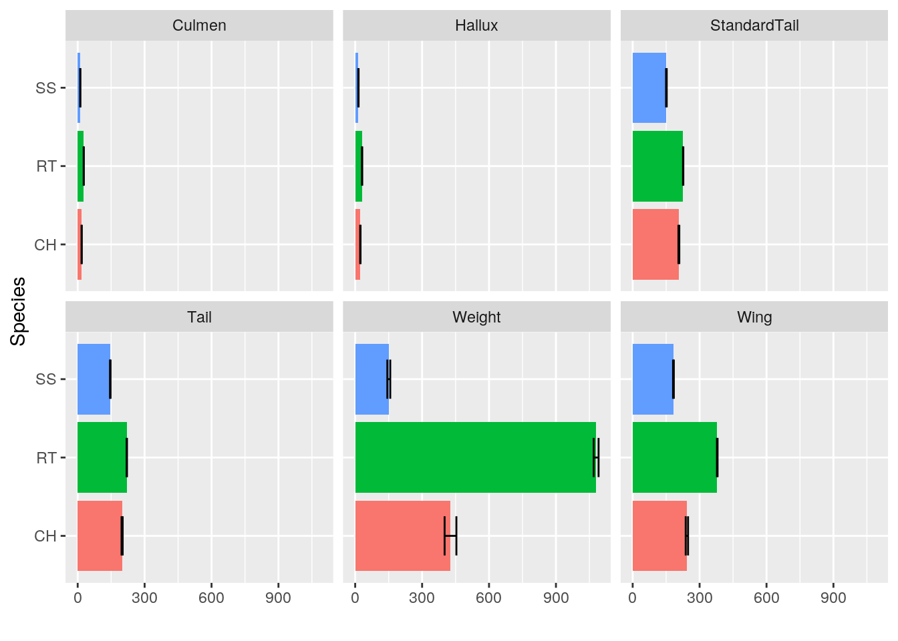
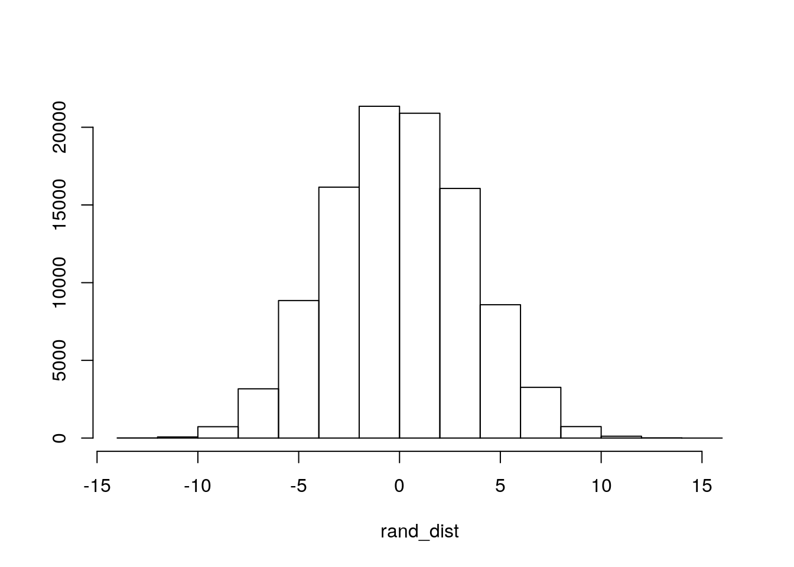
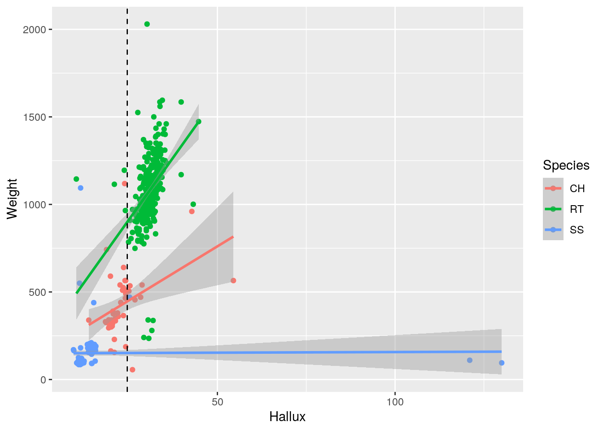
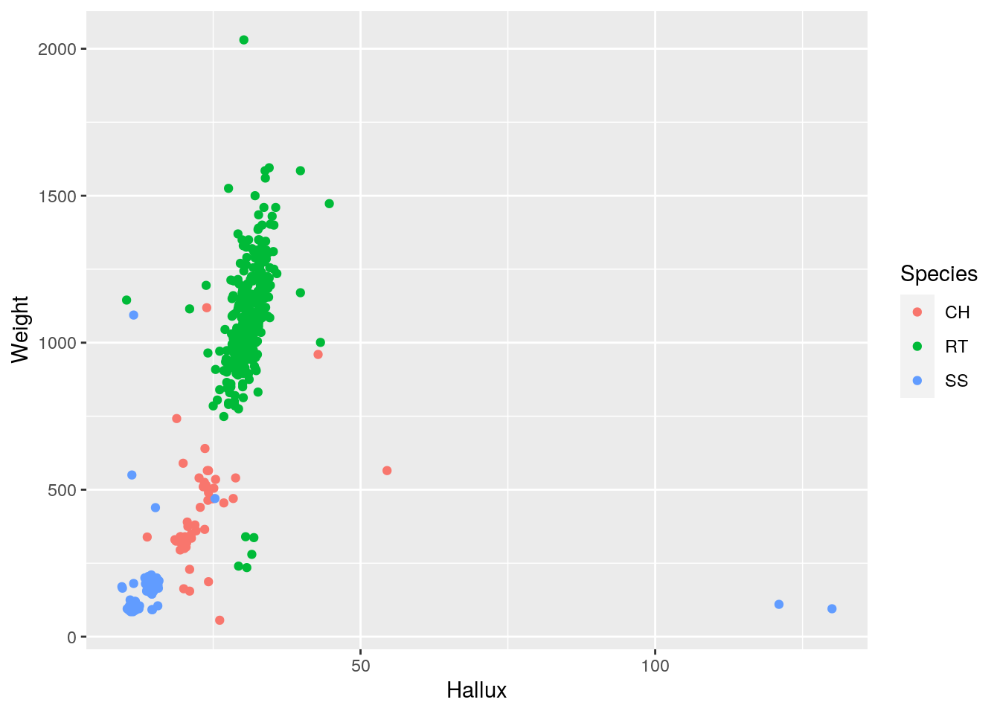
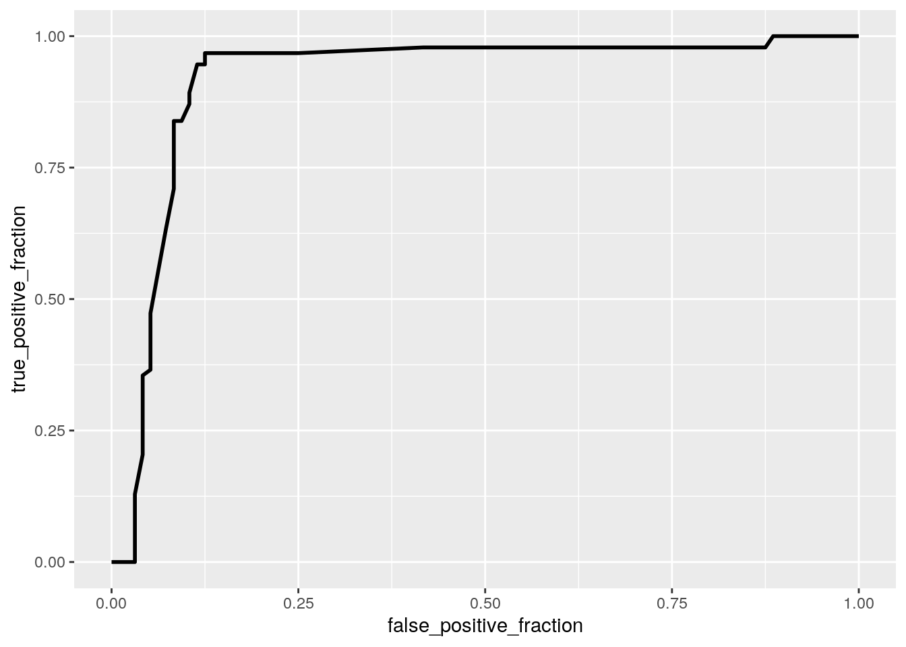
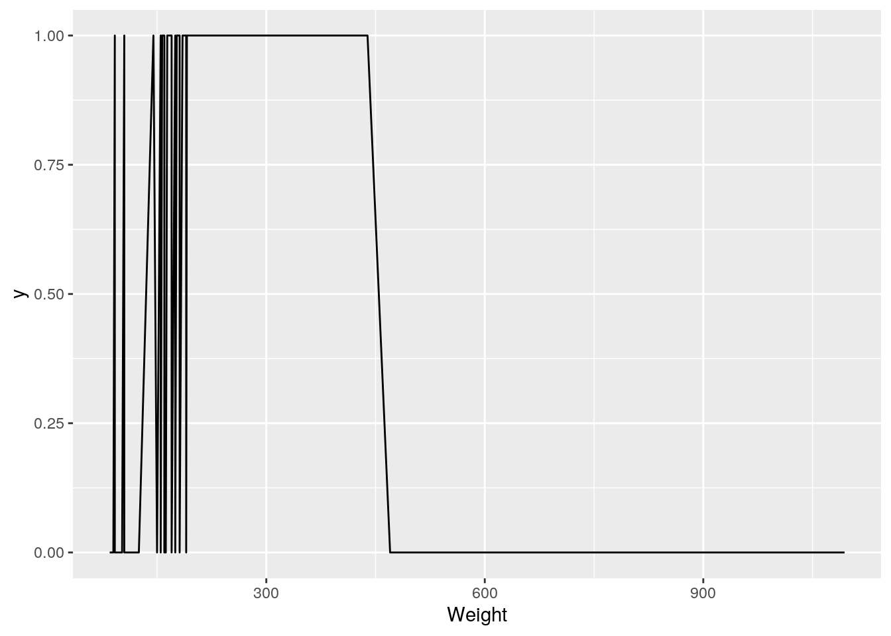

library(dplyr)
library(tidyr)
# Reading in Data
Hawks <- read.csv("Hawks.csv")
Hawks <- as.data.frame(Hawks)
`?`(Stat2Data::Hawks)
Hawks <- Hawks %>% select(Month, Day, Year, BandNumber, Species,
Age, Sex, Wing, Weight, Culmen, Hallux, Tail, StandardTail,
Crop) %>% na.omit()The dataset I decided to use is called “Hawks.csv” and I found it in the “Stat2Data” package. The dataset includes 14 important variables, “Month”, “Day” and “Year”, which all inform when the hawk was observed and measurements taken, as well as “Bandnumber” which is an individual hawk identifier. The dataset includes the variables “species”, in which hawks are classified as one of three species, “age”, which classifies hawks as adult or adolescent, and “sex”, which classifies hawks as male or female. Also in the dataset is “Wing” which is wing length in millimeters, “weight” which is body weight in grams, “culmen” which is the length (mm) of the upper bill from the tip of the bill to the flesh of the bird, “Hallux” which is the length (mm) of the killing talon, “StandardTail” which is the measurement of tail length in milligrams, “Tail” which is a different way of measuring the tail (also in mm), and finally “Tarsus” which is the length of the foot bone in millimeters. I chose this dataset because I think that hawks are really cool, and I also was very intersted in seeing how different species of hawk were from eachother, and how well species could be predicted by the other variables.
# Test for Multivariate Normality
library(rstatix)
library(dplyr)
library(ggplot2)
library(tidyr)
group <- Hawks$Species
DVs <- Hawks %>% select(Wing, Weight, Culmen, Hallux, Tail, StandardTail)
DVs <- as.data.frame(DVs)
sapply(split(DVs, group), mshapiro_test)## CH RT SS
## statistic 0.587367 0.6915775 0.3385071
## p.value 1.659558e-10 9.189805e-24 8.529421e-26# Test of homogeneity of covarience
lapply(split(DVs, group), cov)## $CH
## Wing Weight Culmen Hallux Tail
## Wing 1358.66497 3862.2185 66.090434 47.762011 371.58844
## Weight 3862.21854 34163.0221 333.026148 465.157100 2024.61522
## Culmen 66.09043 333.0261 6.935825 3.801807 30.94745
## Hallux 47.76201 465.1571 3.801807 37.516122 26.53480
## Tail 371.58844 2024.6152 30.947449 26.534800 302.35969
## StandardTail 191.75255 1081.8389 14.061224 32.683546 167.67985
## StandardTail
## Wing 191.75255
## Weight 1081.83886
## Culmen 14.06122
## Hallux 32.68355
## Tail 167.67985
## StandardTail 192.97534
##
## $RT
## Wing Weight Culmen Hallux Tail StandardTail
## Wing 633.88470 2012.4621 26.971307 25.901881 137.43710 121.74115
## Weight 2012.46212 37887.4923 246.485131 214.161993 586.25651 708.39639
## Culmen 26.97131 246.4851 4.825979 3.599108 12.48447 12.56948
## Hallux 25.90188 214.1620 3.599108 7.515724 11.66597 16.19075
## Tail 137.43710 586.2565 12.484470 11.665967 188.02989 108.63984
## StandardTail 121.74115 708.3964 12.569479 16.190750 108.63984 184.66988
##
## $SS
## Wing Weight Culmen Hallux Tail
## Wing 565.447062 1961.400947 44.373378 7.931857 350.137288
## Weight 1961.400947 8198.416486 167.067057 9.822139 1177.083542
## Culmen 44.373378 167.067057 4.093462 2.051561 28.299387
## Hallux 7.931857 9.822139 2.051561 135.938252 7.898204
## Tail 350.137288 1177.083542 28.299387 7.898204 264.198273
## StandardTail 197.577109 443.386745 14.841228 7.159552 164.077973
## StandardTail
## Wing 197.577109
## Weight 443.386745
## Culmen 14.841228
## Hallux 7.159552
## Tail 164.077973
## StandardTail 407.931050# MANOVA
man1 <- manova(cbind(Wing, Weight, Culmen, Hallux, Tail, StandardTail) ~
Species, data = Hawks)
summary(man1)## Df Pillai approx F num Df den Df Pr(>F)
## Species 2 1.3195 178.05 12 1102 < 2.2e-16 ***
## Residuals 555
## ---
## Signif. codes: 0 '***' 0.001 '**' 0.01 '*' 0.05 '.' 0.1 ' ' 1# all univariate ANOVAs
summary.aov(man1)## Response Wing :
## Df Sum Sq Mean Sq F value Pr(>F)
## Species 2 4773930 2386965 3545.4 < 2.2e-16 ***
## Residuals 555 373661 673
## ---
## Signif. codes: 0 '***' 0.001 '**' 0.01 '*' 0.05 '.' 0.1 ' ' 1
##
## Response Weight :
## Df Sum Sq Mean Sq F value Pr(>F)
## Species 2 107079730 53539865 1950.1 < 2.2e-16 ***
## Residuals 555 15237548 27455
## ---
## Signif. codes: 0 '***' 0.001 '**' 0.01 '*' 0.05 '.' 0.1 ' ' 1
##
## Response Culmen :
## Df Sum Sq Mean Sq F value Pr(>F)
## Species 2 29138.1 14569.1 3061.4 < 2.2e-16 ***
## Residuals 555 2641.2 4.8
## ---
## Signif. codes: 0 '***' 0.001 '**' 0.01 '*' 0.05 '.' 0.1 ' ' 1
##
## Response Hallux :
## Df Sum Sq Mean Sq F value Pr(>F)
## Species 2 32793 16396.3 304.52 < 2.2e-16 ***
## Residuals 555 29883 53.8
## ---
## Signif. codes: 0 '***' 0.001 '**' 0.01 '*' 0.05 '.' 0.1 ' ' 1
##
## Response Tail :
## Df Sum Sq Mean Sq F value Pr(>F)
## Species 2 656838 328419 1467.1 < 2.2e-16 ***
## Residuals 555 124240 224
## ---
## Signif. codes: 0 '***' 0.001 '**' 0.01 '*' 0.05 '.' 0.1 ' ' 1
##
## Response StandardTail :
## Df Sum Sq Mean Sq F value Pr(>F)
## Species 2 676680 338340 1294.3 < 2.2e-16 ***
## Residuals 555 145087 261
## ---
## Signif. codes: 0 '***' 0.001 '**' 0.01 '*' 0.05 '.' 0.1 ' ' 1# Mean differences by species
Hawks %>% group_by(Species) %>% summarise(mean(Wing), mean(Weight),
mean(Culmen), mean(Hallux), mean(Tail), mean(StandardTail))## # A tibble: 3 x 7
## Species `mean(Wing)` `mean(Weight)` `mean(Culmen)` `mean(Hallux)` `mean(Tail)`
## <fct> <dbl> <dbl> <dbl> <dbl> <dbl>
## 1 CH 243. 427. 17.7 23.1 199.
## 2 RT 379. 1080. 27.0 31.0 220.
## 3 SS 183. 151. 11.5 14.4 146.
## # … with 1 more variable: `mean(StandardTail)` <dbl># T-tests
pairwise.t.test(Hawks$Wing, Hawks$Species, p.adj = "none")##
## Pairwise comparisons using t tests with pooled SD
##
## data: Hawks$Wing and Hawks$Species
##
## CH RT
## RT <2e-16 -
## SS <2e-16 <2e-16
##
## P value adjustment method: nonepairwise.t.test(Hawks$Weight, Hawks$Species, p.adj = "none")##
## Pairwise comparisons using t tests with pooled SD
##
## data: Hawks$Weight and Hawks$Species
##
## CH RT
## RT <2e-16 -
## SS <2e-16 <2e-16
##
## P value adjustment method: nonepairwise.t.test(Hawks$Culmen, Hawks$Species, p.adj = "none")##
## Pairwise comparisons using t tests with pooled SD
##
## data: Hawks$Culmen and Hawks$Species
##
## CH RT
## RT <2e-16 -
## SS <2e-16 <2e-16
##
## P value adjustment method: nonepairwise.t.test(Hawks$Hallux, Hawks$Species, p.adj = "none")##
## Pairwise comparisons using t tests with pooled SD
##
## data: Hawks$Hallux and Hawks$Species
##
## CH RT
## RT 8.7e-12 -
## SS 4.8e-13 < 2e-16
##
## P value adjustment method: nonepairwise.t.test(Hawks$Tail, Hawks$Species, p.adj = "none")##
## Pairwise comparisons using t tests with pooled SD
##
## data: Hawks$Tail and Hawks$Species
##
## CH RT
## RT <2e-16 -
## SS <2e-16 <2e-16
##
## P value adjustment method: nonepairwise.t.test(Hawks$StandardTail, Hawks$Species, p.adj = "none")##
## Pairwise comparisons using t tests with pooled SD
##
## data: Hawks$StandardTail and Hawks$Species
##
## CH RT
## RT 4.1e-14 -
## SS < 2e-16 < 2e-16
##
## P value adjustment method: none# Visualization
Hawks %>% select(Species, Wing, Weight, Culmen, Hallux, Tail,
StandardTail) %>% pivot_longer(-1, names_to = "names", values_to = "measure") %>%
ggplot(aes(Species, measure, fill = Species)) + geom_bar(stat = "summary") +
geom_errorbar(stat = "summary", width = 0.5) + facet_wrap(~names,
nrow = 2) + coord_flip() + ylab("") + theme(legend.position = "none")
# bonferroni correction
1 - (0.95^25)## [1] 0.72261040.05/25## [1] 0.002The results of the MANOVA test showed that at least one of the numeric variables showed a mean difference across levels of the species variable. After performing univeriate anovas, we can easily reject the null hypothesis that means don’t differ between species for all of the variables: Wing, Weight, Culmen, Hallux, Tail, and StandardTail. Posthoc t-tests showed that every numeric variable, differed significantly no matter what combination of species types were compared, meaning that every species type had a significantly different mean than every other species type, for all of the aforementioned numeric variables. I conducted 1 manova and 6 univariate anova’s, as well as 18 t-tests when I was conducting post-hoc testing. The probability of having a type I error is 72.3%, so I adjusted my p-values to 0.002 (0.05/25) instead of 0.05. Using a p-value of (bonferroni = 0.002) did not change any of my previous conclusions. The assumption of multivariate normality was violated, and the assumption of homogeniety of varience was also violated.
# Randomization
prdat <- Hawks %>% select(Species, Sex, Wing) %>% filter(Sex ==
"M" | Sex == "F") %>% filter(Species == "SS") %>% arrange(Sex)
# actual mean difference
prdat %>% group_by(Sex) %>% summarize(means = mean(Wing)) %>%
summarize(mean_diff = diff(means))## # A tibble: 1 x 1
## mean_diff
## <dbl>
## 1 -25.9# Random distribution
rand_dist <- vector()
for (i in 1:1e+05) {
new <- data.frame(Wing = sample(prdat$Wing), Sex = prdat$Sex)
rand_dist[i] <- mean(new[new$Sex == "F", ]$Wing) - mean(new[new$Sex ==
"M", ]$Wing)
}
# visualization
{
hist(rand_dist, main = "", ylab = "")
abline(v = c(-25.947, 25.947), col = "red")
}
# p-value
mean(rand_dist > 25.947 | rand_dist < -25.947)## [1] 0# ttest for comparison
t.test(data = prdat, Wing ~ Sex)##
## Welch Two Sample t-test
##
## data: Wing by Sex
## t = 9.0271, df = 122.35, p-value = 3.09e-15
## alternative hypothesis: true difference in means is not equal to 0
## 95 percent confidence interval:
## 20.25729 31.63720
## sample estimates:
## mean in group F mean in group M
## 195.9785 170.0312I performed a randomization test to determine if a mean difference exists in wing weight between males and females in the species “SS”. Female birds had a mean difference of -25.94 compared to males of the same species. The null hypothesis is that there is no true mean difference in the population, the alternative hypothesis is that there is a true mean difference (-25.947). I generated my own sampling distribution using 100000 samples of mixed up data and never once was a mean of |25.947| generated (note that the actual mean difference is so large that even after 100000 permutations of random samples the abline doesn’t show up on the graph). The probability of this mean difference occurring due to chance (p-value) is calculated to be zero. We can very definitively reject the null hypothesis. I also ran an actual T-test which agreed with the result of my randomization test.
library(lmtest)
library(sandwich)
# Linear Regression Model with mean centured numeric
# variables
lmdat <- Hawks %>% mutate(Hallux_c = Hallux - mean(Hallux, na.rm = T)) %>%
select(Weight, Hallux_c, Species, Hallux) %>% na.omit()
fit <- lm(Weight ~ Hallux_c * Species, data = lmdat)
summary(fit)##
## Call:
## lm(formula = Weight ~ Hallux_c * Species, data = lmdat)
##
## Residuals:
## Min 1Q Median 3Q Max
## -837.58 -58.19 -12.24 40.07 971.67
##
## Coefficients:
## Estimate Std. Error t value Pr(>|t|)
## (Intercept) 446.146 22.623 19.721 < 2e-16 ***
## Hallux_c 12.399 3.619 3.426 0.000658 ***
## SpeciesRT 453.690 31.323 14.484 < 2e-16 ***
## SpeciesSS -294.786 27.057 -10.895 < 2e-16 ***
## Hallux_c:SpeciesRT 16.096 4.792 3.359 0.000837 ***
## Hallux_c:SpeciesSS -12.327 3.744 -3.293 0.001056 **
## ---
## Signif. codes: 0 '***' 0.001 '**' 0.01 '*' 0.05 '.' 0.1 ' ' 1
##
## Residual standard error: 153.6 on 552 degrees of freedom
## Multiple R-squared: 0.8936, Adjusted R-squared: 0.8926
## F-statistic: 926.8 on 5 and 552 DF, p-value: < 2.2e-16# Visualization
lmdat %>% ggplot(aes(Hallux, Weight, color = Species)) + geom_point() +
geom_smooth(method = "lm") + geom_vline(xintercept = mean(lmdat$Hallux,
na.rm = T), lty = 2)
# homoskedasticity
bptest(fit) #reject the null and use error bars for heterskedasticity##
## studentized Breusch-Pagan test
##
## data: fit
## BP = 12.729, df = 5, p-value = 0.02606# linearity
ggplot(lmdat) + geom_point(aes(Hallux, Weight, color = Species)) #looks good
# normality
shapiro.test(lmdat$Hallux) #reject null##
## Shapiro-Wilk normality test
##
## data: lmdat$Hallux
## W = 0.72862, p-value < 2.2e-16shapiro.test(lmdat$Weight) #reject null##
## Shapiro-Wilk normality test
##
## data: lmdat$Weight
## W = 0.85826, p-value < 2.2e-16# Including Robust Standard Errors
coeftest(fit, vcov = vcovHC(fit))##
## t test of coefficients:
##
## Estimate Std. Error t value Pr(>|t|)
## (Intercept) 446.146 38.324 11.6415 < 2.2e-16 ***
## Hallux_c 12.399 11.037 1.1234 0.2618
## SpeciesRT 453.690 65.416 6.9355 1.137e-11 ***
## SpeciesSS -294.786 39.626 -7.4393 3.899e-13 ***
## Hallux_c:SpeciesRT 16.096 13.585 1.1848 0.2366
## Hallux_c:SpeciesSS -12.327 11.061 -1.1144 0.2656
## ---
## Signif. codes: 0 '***' 0.001 '**' 0.01 '*' 0.05 '.' 0.1 ' ' 1# Variance
summary(fit)$r.sq## [1] 0.8935559I created a linear regression model predicting weight from the hallux size and species type as well as their interaction. The data failed the assumption of normality and homoskedasticity, it did appear to meet the assumption of linearity. For species “CH”, every one unit increase in Hallux the predicted weight increases by 12.399 (significant). For species “RT”, every one unit increase in Hallux the predicted weight increases by 16.096 (significant). For species “SS”, every one unit increase in Hallux the predicted weight decreases by 12.327 (significant). For the intercept, the mean predicted weight for species “CH” with average hallux size is 446.146 (significant). The mean predicted weight for species “RT” with average hallux size is 453.690 greater than for “CH” (significant). The mean predicted weight for species “SS” with average hallux size is 294.786 less than for “CH” (significant). After recomputing regression results with robust standard errors, some of the coefficients changed in regards to their significance. The interaction coefficients between species and centered hallux size were no longer significant, what remained significant was predicted weights of each species when the hallux size is average, the coefficients (#) of these variables themselves did not change. The model explains 89.36% of the variation in the outcome (R^2).
# LM with bootstrap SEM
boot_dat <- sample_frac(lmdat, replace = T)
samp_distn <- replicate(5000, {
boot_dat <- sample_frac(lmdat, replace = T)
fit <- lm(Weight ~ Hallux_c * Species, data = boot_dat)
coef(fit)
})
samp_distn %>% t %>% as.data.frame %>% summarize_all(sd)## (Intercept) Hallux_c SpeciesRT SpeciesSS Hallux_c:SpeciesRT
## 1 30.74176 7.036157 54.86736 76.92364 9.817478
## Hallux_c:SpeciesSS
## 1 9.37548samp_distn %>% t %>% as.data.frame %>% pivot_longer(1:3) %>%
group_by(name) %>% summarize(lower = quantile(value, 0.025),
upper = quantile(value, 0.975))## # A tibble: 3 x 3
## name lower upper
## <chr> <dbl> <dbl>
## 1 (Intercept) 397. 517.
## 2 Hallux_c 5.22 28.4
## 3 SpeciesRT 330. 542.The standard deviations generated by regressing with bootstrap SEM were lower for every interaction/coefficient than those generated by robust SE’s in the prior chunk. The standard deviations from the bootstrap SEM were higher, however, for every interaction/coefficient than those generated by just a linear regression. Using robust SE’s appears to be the most conservative and therefor likely the best model to use in this case.
# Logistic Regression Model
data <- Hawks %>% select(Species, Sex, Weight, Wing) %>% filter(Sex ==
"M" | Sex == "F") %>% filter(Species == "SS") %>% arrange(Sex) %>%
mutate(y = ifelse(Sex == "F", 1, 0))
fit <- glm(y ~ Wing + Weight, data = data, family = "binomial")
summary(fit)##
## Call:
## glm(formula = y ~ Wing + Weight, family = "binomial", data = data)
##
## Deviance Residuals:
## Min 1Q Median 3Q Max
## -5.1069 -0.4022 -0.1115 0.4091 3.2292
##
## Coefficients:
## Estimate Std. Error z value Pr(>|z|)
## (Intercept) -44.154930 5.962255 -7.406 1.30e-13 ***
## Wing 0.289611 0.039461 7.339 2.15e-13 ***
## Weight -0.058122 0.008513 -6.828 8.64e-12 ***
## ---
## Signif. codes: 0 '***' 0.001 '**' 0.01 '*' 0.05 '.' 0.1 ' ' 1
##
## (Dispersion parameter for binomial family taken to be 1)
##
## Null deviance: 261.96 on 188 degrees of freedom
## Residual deviance: 117.65 on 186 degrees of freedom
## AIC: 123.65
##
## Number of Fisher Scoring iterations: 6coef(fit) %>% exp() %>% round(5) %>% data.frame## .
## (Intercept) 0.00000
## Wing 1.33591
## Weight 0.94354prob <- predict(fit, type = "response")
table(predict = as.numeric(prob > 0.5), truth = data$y) %>% addmargins## truth
## predict 0 1 Sum
## 0 89 5 94
## 1 7 88 95
## Sum 96 93 189(88 + 89)/189## [1] 0.936507988/93## [1] 0.946236689/96## [1] 0.927083388/95## [1] 0.9263158library(plotROC)
ROCplot <- ggplot(data) + geom_roc(aes(d = y, m = Weight), n.cuts = 0)
ROCplot
calc_auc(ROCplot)## PANEL group AUC
## 1 1 -1 0.9176187ggplot(data) + geom_line(aes(x = Weight, y = y))
I created a logistical linear regression predicting sex from weight and wing length. Wing length predicts sex significantly, for every one unit increase in wing length the odds of being female changes by a factor of 0.289611. Weight also predicts sex significantly, for every one unit increase in weight the odds of being female changes by a factor of -0.058122. The AUC calculated is 0.9176, which falls within the range of “great”. Using the numbers from the confusion matrix, the accuracy is .9365, the specificity is 0.9462, the sensitivity is 0.9271, and the precision is 0.9263.
# LEAVE THIS CHUNK ALONE!
library(knitr)
opts_chunk$set(fig.align = "center", fig.height = 5, message = FALSE,
warning = FALSE, fig.width = 8, tidy.opts = list(width.cutoff = 60),
tidy = TRUE)
class_diag <- function(probs, truth) {
tab <- table(factor(probs > 0.5, levels = c("FALSE", "TRUE")),
truth)
acc = sum(diag(tab))/sum(tab)
sens = tab[2, 2]/colSums(tab)[2]
spec = tab[1, 1]/colSums(tab)[1]
ppv = tab[2, 2]/rowSums(tab)[2]
if (is.numeric(truth) == FALSE & is.logical(truth) == FALSE)
truth <- as.numeric(truth) - 1
# CALCULATE EXACT AUC
ord <- order(probs, decreasing = TRUE)
probs <- probs[ord]
truth <- truth[ord]
TPR = cumsum(truth)/max(1, sum(truth))
FPR = cumsum(!truth)/max(1, sum(!truth))
dup <- c(probs[-1] >= probs[-length(probs)], FALSE)
TPR <- c(0, TPR[!dup], 1)
FPR <- c(0, FPR[!dup], 1)
n <- length(TPR)
auc <- sum(((TPR[-1] + TPR[-n])/2) * (FPR[-1] - FPR[-n]))
data.frame(acc, sens, spec, ppv, auc)
}# Logistic Regression all Variables
Hawk <- Hawks %>% select(-Year, -Month, -Day, -BandNumber) %>%
filter(Sex == "M" | Sex == "F") %>% mutate(y = ifelse(Sex ==
"F", 1, 0)) %>% select(-Sex)
fit <- glm(y ~ (.), data = Hawk, family = binomial)
prob <- predict(fit, type = "response")
class_diag(prob, Hawk$y)## acc sens spec ppv auc
## 1 0.9045643 0.9338843 0.875 0.8828125 0.9552342table(predict = as.numeric(prob > 0.5), truth = Hawk$y) %>% addmargins## truth
## predict 0 1 Sum
## 0 105 8 113
## 1 15 113 128
## Sum 120 121 241# CV
k = 10
data <- Hawk[sample(nrow(Hawk)), ]
folds <- cut(seq(1:nrow(Hawk)), breaks = k, labels = F)
diags <- NULL
for (i in 1:k) {
train <- data[folds != i, ]
test <- data[folds == i, ]
truth <- test$y
fit <- glm(y ~ ., data = train, family = "binomial")
probs <- predict(fit, newdata = test, type = "response")
diags <- rbind(diags, class_diag(probs, truth))
}
summarize_all(diags, mean)## acc sens spec ppv auc
## 1 0.8961667 0.9364521 0.8647608 0.866834 0.9318807# lasso
library(glmnet)
y <- as.matrix(Hawk$y)
x <- model.matrix(y ~ ., data = Hawk)[, -1]
cv <- cv.glmnet(x, y, family = "binomial")
lasso <- glmnet(x, y, family = "binomial", lambda = cv$lambda.1se)
coef(lasso)## 11 x 1 sparse Matrix of class "dgCMatrix"
## s0
## (Intercept) -13.58533262
## SpeciesRT .
## SpeciesSS 3.28536604
## AgeI -0.31685558
## Wing .
## Weight .
## Culmen .
## Hallux .
## Tail 0.03830873
## StandardTail 0.03186199
## Crop .class_diag(prob, Hawk$y)## acc sens spec ppv auc
## 1 0.9045643 0.9338843 0.875 0.8828125 0.9552342table(predict = as.numeric(prob > 0.5), truth = Hawk$y) %>% addmargins## truth
## predict 0 1 Sum
## 0 105 8 113
## 1 15 113 128
## Sum 120 121 241# CV with important variables
k = 10
Hawk <- Hawk %>% mutate(Species = if_else(Species == "SS", 1,
0), Age = if_else(Age == "I", 1, 0))
data <- Hawk[sample(nrow(Hawk)), ]
folds <- cut(seq(1:nrow(Hawk)), breaks = k, labels = F)
diags <- NULL
for (i in 1:k) {
train <- data[folds != i, ]
test <- data[folds == i, ]
truth <- test$y
fit <- glm(y ~ Age + StandardTail + Tail + Species, data = train,
family = "binomial")
probs <- predict(fit, newdata = test, type = "response")
diags <- rbind(diags, class_diag(probs, truth))
}
summarize_all(diags, mean)## acc sens spec ppv auc
## 1 0.9251667 0.9641392 0.8920581 0.9012447 0.9430901I performed a logistic regression predicting sex from every variable and the AUC calculated is 0.9552, which falls within the range of “great”. The sensitivity is 0.9339, the specificity is 0.875, the precision is 0.8828, and the accuracy is 0.9045. After performing 10-fold CV, The accuracy decreased to 0.8962, the sensitivity to 0.8961, the specificity increased to 0.8793, the precision decreased to 0.8632, and the AUC decreased to 0.9211, which means in the prior model there was likely overfitting. After performing lasso the variables retained were species “SS”, age “I”, Tail and StandardTail. I performed a 10-fold CV using only the four variables that lasso deemed important and achieved an AUC of 0.9524, which is just below the glm I performed with every variable, and is greater than the AUC generated by my first 10-fold CV.